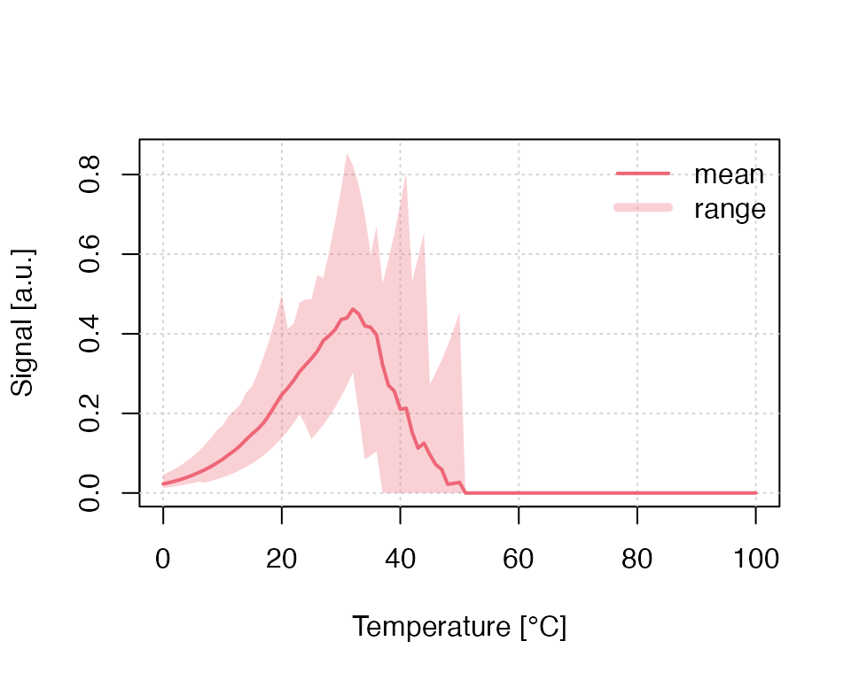

`RLumCarlo’: Tedious features - fine examples
Sebastian Kreutzer, Johannes Friedrich, Vasilis Pagonis, Christoph Schmidt
RLumCarlo: v0.1.7.9000.5 | last modified: 2020-11-03
Source:vignettes/RLumCarlo_-_Getting_started_with_RLumCarlo.Rmd
RLumCarlo_-_Getting_started_with_RLumCarlo.Rmd
Scope
`RLumCarlo’ is a collection of energy-band models to simulate luminescence signals in dosimetric materials using Monte-Carlo (MC) methods for various stimulation modes. This document aims at supplementing the package documentation and elaborating the package examples.
The models in `RLumCarlo’
Overview
| TRANSITION | BASE MODEL | IRSL | OSL | LM-OSL | TL |
|---|---|---|---|---|---|
| Delocalised | OTOR | - | X | X | X |
| Localised | GOT | X | - | X | X |
| Excited state tunnelling | LTM | X | - | X | X |
In the table above column headers refer to stimulation modes, which are infrared stimulated luminescence (IRSL), optically stimulated luminescence (OSL), LM-OSL (Bulur 1996), and thermally stimulated luminescence (short: TL). In the column `BASE MODEL’ OTOR refers to `One Trap-One Recombination Centre’, GOT to `General One Trap’, and LTM to `Localized Transition Model’ (Jain, Guralnik, and Andersen 2012; Pagonis et al. 2019). For general overview we refer to the excellent book by Chen and Pagonis (2011).
Where to find them
The following table lists models as implemented in `RLumCarlo’ along with the R function call and the corresponding R (*.R) and C++ (*.cpp) files. The modelling takes place in the C++ functions which are wrapped by the R functions with a similar name. If you, however, want to cross-check the code, you should inspect files with the ending .cpp.
| MODEL_NAME | R_CALL | CORRESPONDING_FILES |
|---|---|---|
| MC_CW_IRSL_LOC | run_MC_CW_IRSL_LOC() | R/run_MC_CW_IRSL_LOC.R src/MC_C_MC_CW_IRSL_LOC.cpp |
| MC_CW_IRSL_TUN | run_MC_CW_IRSL_TUN() | R/run_MC_CW_IRSL_TUN.R src/MC_C_MC_CW_IRSL_TUN.cpp |
| MC_CW_OSL_DELOC | run_MC_CW_OSL_DELOC() | R/run_MC_CW_OSL_DELOC.R src/MC_C_MC_CW_OSL_DELOC.cpp |
| MC_ISO_DELOC | run_MC_ISO_DELOC() | R/run_MC_ISO_DELOC.R src/MC_C_MC_ISO_DELOC.cpp |
| MC_ISO_LOC | run_MC_ISO_LOC() | R/run_MC_ISO_LOC.R src/MC_C_MC_ISO_LOC.cpp |
| MC_ISO_TUN | run_MC_ISO_TUN() | R/run_MC_ISO_TUN.R src/MC_C_MC_ISO_TUN.cpp |
| MC_LM_OSL_DELOC | run_MC_LM_OSL_DELOC() | R/run_MC_LM_OSL_DELOC.R src/MC_C_MC_LM_OSL_DELOC.cpp |
| MC_LM_OSL_LOC | run_MC_LM_OSL_LOC() | R/run_MC_LM_OSL_LOC.R src/MC_C_MC_LM_OSL_LOC.cpp |
| MC_LM_OSL_TUN | run_MC_LM_OSL_TUN() | R/run_MC_LM_OSL_TUN.R src/MC_C_MC_LM_OSL_TUN.cpp |
| MC_TL_DELOC | run_MC_TL_DELOC() | R/run_MC_TL_DELOC.R src/MC_C_MC_TL_DELOC.cpp |
| MC_TL_LOC | run_MC_TL_LOC() | R/run_MC_TL_LOC.R src/MC_C_MC_TL_LOC.cpp |
| MC_TL_TUN | run_MC_TL_TUN() | R/run_MC_TL_TUN.R src/MC_C_MC_TL_TUN.cpp |
Each model is run by calling one of the R functions starting with run_. Currently, three different model types (TUN: tunnelling, LOC: localised transition, DELOC: delocalised transition) are implemented for the stimulation types TL, IRSL, LM-OSL, and ISO (isothermal). Please note that each model has different parameters and requirements.
`RLumCarlo’ model parameters and variables
The following table summarises the parameters used in the implemented MC models along with their physical meaning, units and the range of realistic values. This range represents just a rough guideline and might be exceeded for particular cases.
Examples
The following examples illustrate the capacity of `RLumCarlo’, by using code-snippets deploying longer simulation times than allowed for the standard package examples, which aim at a functionality test.
Example 1: A first example
The first example is an iso-thermal decay curve using the tunnelling model (other models work similarly). Returned are either the simulated signal or the estimated remaining trapped charge carriers. The Function plot_RLumCarlo() provides an easy way to visualise the modelling results and is here called using the tee operator %T> from the package magrittr (which is imported by `RLumCarlo’). Simulation results are stored in the object results while, at the same time, piped to the function plot_RLumCarlo() for the output visualisation.
Model the signal
The most obvious modelling output is the luminescence signal itself, our example below simulates an iso-thermal (ITL) signal for a temperature (T) of 200 °C over 5,000 s using a tunnelling transition model. Trap parameters are \(E = 1.2\) eV for the trap depth and a frequency factor of \(1\times10^{10}\) (1/s). The parameter rho (\(\rho'\)) defines the recombination centre density.
results <- run_MC_ISO_TUN( E = 1.2, s = 1e10, T = 200, N_e = 200, rho = 0.007, clusters = 10, times = seq(0, 5000) ) %T>% plot_RLumCarlo(norm = TRUE, legend = TRUE, main = "Iso-thermal decay (TUN)")
 In the example above
In the example above N_e is a scalar, which means that all clusters start with the same number of electrons (here 200). However, `RLumCarlo’ supports different starting conditions with regard to the initial number of electrons. For example, one could assume that the number of initial electrons vary randomly between 190 and 210. Such a situation is created in the next example. Generally, `RLumCarlo’ supports such an input for the parameters N_e and n_filled.
results <- run_MC_ISO_TUN( E = 1.2, s = 1e10, T = 200, N_e = sample(190:210,10,TRUE), rho = 0.007, clusters = 10, times = seq(0, 5000) ) %T>% plot_RLumCarlo(norm = TRUE, legend = TRUE, main = "Iso-thermal decay (TUN) for varying N_e")

Model remaining charges
The first example can be slightly altered to provide alternative insight. Instead of the luminescence signal, the variant below returns the number of remaining electrons in the trap.
results <- run_MC_ISO_TUN( E = 1.2, s = 1e10, T = 200, rho = 0.007, times = seq(0, 5000), output = "remaining_e" ) %T>% plot_RLumCarlo( legend = TRUE, ylab = "Remaining electrons" )

Understanding the numerical output
In both cases the modelling output is an object of class RLumCarlo_Model_Output, which is basically a list consisting of an array and a numeric (vector).
str(results)
## List of 2
## $ signal: num [1:5001, 1:21, 1:10] 200 200 200 200 200 200 200 200 200 200 ...
## ..- attr(*, "dimnames")=List of 3
## .. ..$ : NULL
## .. ..$ : NULL
## .. ..$ : NULL
## $ time : int [1:5001] 0 1 2 3 4 5 6 7 8 9 ...
## - attr(*, "class")= chr "RLumCarlo_Model_Output"
## - attr(*, "model")= chr "run_MC_ISO_TUN"While this represents the full modelling output results, its interpretation might be less straight forward, and the user may want to condense the information via summary(). The function summary() is also used internally by the function plot_RLumCarlo() to simplify the data before there are plotted.
df <- summary(results)
## time mean y_min y_max sd
## Min. : 0 Min. :3074 Min. :3056 Min. :3094 Min. : 1.059
## 1st Qu.:1250 1st Qu.:3181 1st Qu.:3150 1st Qu.:3202 1st Qu.:12.237
## Median :2500 Median :3342 Median :3326 Median :3372 Median :13.343
## Mean :2500 Mean :3422 Mean :3400 Mean :3445 Mean :13.142
## 3rd Qu.:3750 3rd Qu.:3598 3rd Qu.:3582 3rd Qu.:3623 3rd Qu.:14.283
## Max. :5000 Max. :4199 Max. :4197 Max. :4200 Max. :17.128
## var sum
## Min. : 1.122 Min. :30740
## 1st Qu.:149.733 1st Qu.:31813
## Median :178.044 Median :33421
## Mean :176.180 Mean :34216
## 3rd Qu.:204.011 3rd Qu.:35984
## Max. :293.378 Max. :41993head(df)
## time mean y_min y_max sd var sum
## 1 0 4199.3 4197 4200 1.059350 1.122222 41993
## 2 1 4198.6 4195 4200 1.429841 2.044444 41986
## 3 2 4198.1 4194 4200 1.852926 3.433333 41981
## 4 3 4197.1 4193 4199 1.969207 3.877778 41971
## 5 4 4196.4 4191 4199 2.796824 7.822222 41964
## 6 5 4195.7 4190 4199 3.198958 10.233333 41957The call summarises the modelling results and returns a terminal output and a data.frame with, e.g., the mean or the standard deviation, which can be used to create plots for further insight. For instance, the stimulation time against coefficient of variation (CV in %):
plot( x = df$time, y = (df$sd / df$mean) * 100, pch = 20, col = rgb(0,0,0,.1), xlab = "Stimulation time [s]", ylab = "CV [%]" )

Example 2: Combining two plots
The following examples use again the tunnelling model but for continuous wave (CW) infrared light stimulation (IRSL), and they combine two plots in one single plot window.
## set time vector times <- seq(0, 1000) ## Run MC simulation run_MC_CW_IRSL_TUN(A = 0.12, rho = 0.003, times = times) %>% plot_RLumCarlo(norm = TRUE, legend = TRUE) run_MC_CW_IRSL_TUN(A = 0.21, rho = 0.003, times = times) %>% plot_RLumCarlo(norm = TRUE, add = TRUE)

Example 3: Testing different parameters
The example above can be further extended to test the effect of different parameters. Contrary to the example above, here the results are stored in a list and plot_RLumCarlo() is called only one time and it will then iterate automatically over the results to create a combined plot.
s <- 3.5e12 rho <- 0.015 E <- 1.45 r_c <- c(0,0.7,0.77,0.86, 0.97) times <- seq(100, 450) # here time = temperature results <- lapply(r_c, function(x) { run_MC_TL_TUN( s = s, E = E, rho = rho, r_c = x, times = times ) })
The plot output can be highly customised to provide a better visual experience, e.g., the manual setting of the colours and the legend.
## plot curves, but without legend plot_RLumCarlo( object = results, ylab = "normalised TL signal", xlab = "Temperature [\u00b0C]", plot_uncertainty = "range", col = khroma::colour("bright")(length(r_c)), legend = FALSE, norm = TRUE ) ## add legend manually legend( "topleft", bty = "n", legend = paste0("r_c: ", r_c), lty = 1, col = khroma::colour("bright")(length(r_c)) )

Example 4: Dosimetric cluster systems
`RLumCarlo’ supports the simulation of a cheap dosimetric cluster system with spatial correlation. Such a dosimetric cluster system can be created with the function create_ClusterSystem():
clusters <- create_ClusterSystem(n = 100, plot = TRUE)
 The result is an arbitrary dosimetric system with randomly distributed clusters. The Euclidean distance is used to group the clusters (colour code). To use the system in the simulation, instead of providing a scalar as input to
The result is an arbitrary dosimetric system with randomly distributed clusters. The Euclidean distance is used to group the clusters (colour code). To use the system in the simulation, instead of providing a scalar as input to clusters, the output of create_ClusterSystem() can be injected in every run_MC function.
run_MC_TL_LOC( s = 1e14, E = 0.9, times = 0:100, b = 1, n_filled = 1000, method = "seq", clusters = clusters, r = 1) %>% plot_RLumCarlo()

Please note: For the simulation of a dosimetric cluster system, the meaning of n_filled changes. Instead of defining the number of electrons per cluster, it becomes the total number of electrons in the system. Electrons are distributed according to the grouping of the single clusters (the colours in the three-dimensional scatter plot). Within one group, electrons are distributed evenly.